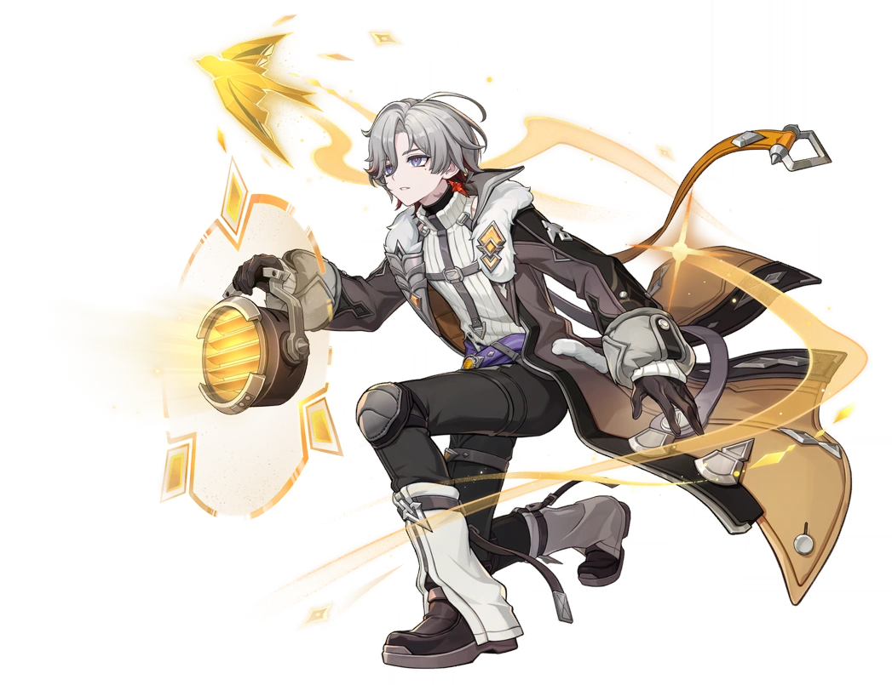

Член разведывательного отряда «Соловьи Ночного Кошмара», самый молодой командир отряда.

Иллуги — самый молодой командир разведывательного отряда «Соловьи Ночного Кошмара», состоящий в рядах Светоносцев.
Титул — «Пылающее сердце ночного кошмара», созвездие — Золотой Соловей.